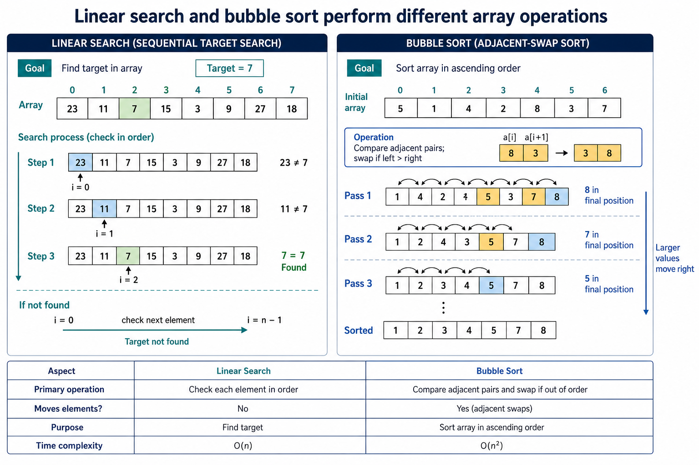

Bubble sort and linear search algorithms: Bubble sort using arrays
Visual overview
Linear search and bubble sort perform different array operations

Visual transcript
- Linear search checks elements in order until the target is found or the array ends.
- Bubble sort compares adjacent pairs and swaps values that are out of ascending order.
- Repeated passes move larger values towards the end.
Core explanation
Bubble sort makes repeated passes through the unsorted part of an array. It compares adjacent elements and swaps them when they are in the wrong order.
After each ascending pass, the largest remaining value has moved to the high end, so the next inner loop can stop one position earlier.
A complete algorithm requires nested loop bounds, an adjacent comparison, a three-assignment swap and a valid stopping rule. Showing one swap or one pass is not the same as writing the algorithm.
Linear search checks successive array elements until it finds the target or exhausts the populated bounds. It works on unsorted data and must include both the found and not-found outcomes.
Linear search procedure
- Choose the unsorted rangeRun Count−1 passes and shorten the compared range because the high end becomes sorted after each pass.
- Inspect adjacent valuesFor ascending order, swap when Value[Index] is greater than Value[Index+1].
- Use a temporary variable safelyStore one value in Temp before overwriting it, then complete all three assignments.
Worked example · Write and trace an ascending bubble sort
- Code
FOR Pass <- 1 TO Count - 1 FOR Index <- 1 TO Count - Pass IF Value[Index] > Value[Index + 1] THEN Temp <- Value[Index] Value[Index] <- Value[Index + 1] Value[Index + 1] <- Temp ENDIF NEXT Index NEXT Pass - Pass 1
For [4, 1, 3], compare 4/1 and swap → [1,4,3]; compare 4/3 and swap → [1,3,4]. The largest value is now fixed at the end.
- Pass 2
Compare 1/3; no swap is needed, so the final array is [1,3,4].